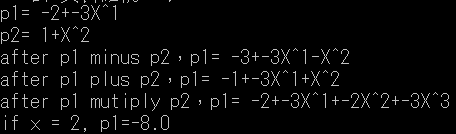

import java.io.*;
// 定義一個節點類別 Node
// data : 用來儲存節點資料值
// link : 為一個 Node 參考，它指向下一個節點
class Node{
int data;
Node link;}
// 定義 List 為一個單向鏈結串列類別
// front：為一個 Node 參考，它的 link 指向鏈結串列的前端
// rear ：為一個 Node 參考，它的 link 指向鏈結串列的尾端
class List{
private Node front;
private Node rear;
//產生一個空串列，它只有 front 及 rear 兩個節點
List(){
front = new Node();
rear = new Node();
front.link = null;
rear.link = null;}
//判斷是否為空串列
boolean is_empty(){
if (front.link == null) return true;
else return false;}
//將資料(key)插入環狀鏈結串列中，並按小至大順序排列
void insert_node(int key){
Node new_node, prev_node, this_node;
new_node = new Node();
new_node.data = key;
new_node.link = null;
if (is_empty()){
// 空串列，插入第一個節點到front之後
front.link = new_node;
rear.link = new_node;
new_node.link=new_node;}
else{
this_node = front.link;
if (key < this_node.data){
// 插入到串列之前端
front.link = new_node;
new_node.link = this_node;
rear.link.link = new_node;}
else{
while (!this_node.link.equals(front.link) ){
// 插入到串列中間
prev_node = this_node;
this_node = this_node.link;
if (key < this_node.data){
prev_node.link = new_node;
new_node.link = this_node;
return;}
}
this_node.link = new_node; // 插入到串列尾端
rear.link = new_node;
new_node.link=front.link;}
}
}
//自環狀鏈結串列中刪除資料 key
void delete_node(int key){
Node this_node, prev_node, temp_node;
prev_node = front;
this_node = front.link;
while (this_node.link != null){
// 當不是最後一個節點時
if (key == this_node.data){
temp_node = this_node;
prev_node.link = this_node.link;
temp_node = null;
rear.link.link=front.link;} //有可能是前端節點 所以重新建立環狀鏈結
return;
prev_node = this_node;
this_node = this_node.link;}
if (key == this_node.data){
// 判斷最後一個節點
temp_node = this_node;
prev_node.link = front.link;
// 我們將最後一個節點的 link 指向 前端節點
rear.link = prev_node;
temp_node = null;}
else System.out.println("...找不到資料" + key);
if(key==front.link.data && rear.link.link==rear.link){
//當串列只有一個節點時
this_node=null;
front.link=null;
rear.link=null;
return;}
}
//從 front 開始列印資料(由小至大)
public void print(){
Node this_node;
if (!is_empty()){
// 若非空串列
this_node = front.link;
System.out.print("==>串列內容為:");
while (this_node.link != front.link){
System.out.print(this_node.data + "->");
this_node = this_node.link;
if(this_node.link == front.link)//擷取環狀串列的一段
break;}
System.out.print(this_node.data + "\n");
//System.out.println("rear " +rear.link.data);} 確認最後一個節點指向哪裡
else System.out.println("!!!空串列");}
//將環狀鏈結串列列印長度
public void length(){
int count = 0;
Node this_node;
if (front.link != null){
this_node = front.link;
while (this_node.link != null){
if (this_node.link == front.link)
break;
count++;
this_node = this_node.link;}
count++;
System.out.println("==>串列長度為：" + count);}
else System.out.println("!!!空串列，串列長度為：0");}
}
class HW3_1{
public static int showMenu() throws IOException{
System.out.println();
System.out.println("=======================");
System.out.println("請輸入要操作的項目：");
System.out.println("1.插入資料");
System.out.println("2.刪除資料");
System.out.println("3.結束程式");
System.out.println("=======================");
return getInt();}
public static int getInt() throws IOException{
System.out.print("請輸入一個整數：");
BufferedReader in = new BufferedReader(new InputStreamReader(System.in));
return Integer.parseInt(in.readLine());}
public static void main(String[] args) throws IOException{
boolean isContinue = true;
List list_1 = new List();
while (isContinue){
switch (showMenu()){
case 1:
System.out.println("【插入，並保持資料由小至大之排序】...");
list_1.insert_node(getInt());
list_1.print();
list_1.length();
break;
case 2:
int x = getInt();
System.out.println("【刪除" + x + "】...");
list_1.delete_node(x);
list_1.print();
list_1.length();
break;
case 3:
isContinue = false;
break;
}
}
}
}
// class Node : 定義 Node 為一個節點類別
// data : 用來儲存節點資料值
// r_link : 為一個 Node 指標，它指向下一個節點
// l_link : 為一個 Node 指標，它指向前一個節點
class Node{
int data;
Node l_link;
Node r_link;}
// class DoubleList : 定義 DoubleList 為一個雙向鏈結串列類別
// front : 為一個 Node 指標，它指向雙向鏈結串列的前端(串列的頭)
// rear : 為一個 Node 指標，它指向雙向鏈結串列的尾端(串列的尾)
class DoubleList{
private Node front;
private Node rear;
// 產生一個空串列，它只有 front 及 rear 兩個節點
public DoubleList( ){
front = new Node();
rear = new Node();
front.r_link = null;
rear.r_link = null;}
// 判斷是否為空串列
public boolean is_empty(){
if(front.r_link == null)
return true;
else
return false;}
// 將資料(key)插入雙向鏈結串列中，並按大至小順序排列
public void insert_node(int key){
Node new_node, prev_node, this_node;
new_node = new Node();
new_node.data = key;
new_node.l_link = null;
new_node.r_link = null;
if(is_empty()){
front.r_link = new_node;
rear.r_link = new_node;
new_node.l_link = null;
new_node.r_link = null;}
else{
this_node = front.r_link;
if(key > this_node.data){
front.r_link = new_node;
new_node.r_link = this_node;
new_node.l_link = null;
this_node.l_link = new_node;}
else{
while(this_node.r_link != null){
prev_node = this_node;
this_node = this_node.r_link;
if(key > this_node.data){
prev_node.r_link = new_node;
new_node.l_link = prev_node;
new_node.r_link = this_node;
this_node.l_link = new_node;
return;}
}
this_node.r_link = new_node;
new_node.l_link = this_node;
new_node.r_link = null;
rear.r_link = new_node;}
}
}
// ------------------------------------
// 從 rear 開始列印資料(由小至大)
// ------------------------------------
public void back_display(){
Node this_node;
if( !is_empty() ){ // 若非空串列
this_node = rear.r_link;
System.out.print("==>串列內容為：");
while(this_node.l_link != null){
System.out.print(this_node.data+" -> ");
this_node = this_node.l_link;}
System.out.print(this_node.data+"\n");}
else System.out.println("!!!空串列");}
}
class List_31580{
public static void main(String[] args){
int i;
int a[] = {31, 5, 83, 65};
DoubleList d_list = new DoubleList();
System.out.println("【將資料插入雙向鏈結串列，並保持資料由大至小之排序】...");
for(i = 0; i < a.length; i++){
System.out.println(" 步驟 < " + i + "> 插入 "+a[i]);
d_list.insert_node(a[i]);
d_list.back_display();}
}
}

import java.math.*;
class Poly{
int[ ] coeff; //自身係數陣列
int[] coeff_minus_plus; //相加減用係數陣列
int order; // 此多項式最高次方
public Poly(int[] array){ //建構子，產生新對應的結果陣列
this.order = array.length - 1;
this.coeff = new int[array.length];
for (int i = 0 ; i <= this.order ; i++){
this.coeff[i] = array[i]; //初始係數陣列}
}
public void display() { //顯示
for(int i=0 ; i<=this.order ; i++){
if(i==0){ //第一項
if(coeff[i]!=0 ){
System.out.print(coeff[i]);//常數項}
}
else{ //第一項之外的其他項
if(coeff[i] == -1){
//小於零，不用額外再加減號
System.out.print("-");}
else if(coeff[i]!=0){
System.out.print("+");} //補上加號顯示
if(coeff[i]==1){ //印次方
System.out.print("X^" + i)};
else if(coeff[i]==0){//do nothing}
else if(coeff[i] !=-1){ //印係數和次方
System.out.print(coeff[i] + "X^" + i);}
else {
System.out.print("X^" + i);} //印次方
}
}
System.out.println();}
public double eval(int x){ //帶入 x 求值
double result=0;
result = result + this.coeff[0];//加常數項
for (int i=1 ; i <= this.order ; i++)
result = result + this.coeff[i]*Math.pow(x, i);
return result;}
public void display_minus_plus() { //顯示
for(int i=0 ; i< this.coeff_minus_plus.length ; i++){
//先印係數在印X
if(i==0){ //第一項
if(coeff_minus_plus[i]!=0){ //常數項
System.out.print(coeff_minus_plus[i]);}
}
else { //第一項之外的其他項
if(coeff_minus_plus[i] ==-1){
System.out.print("-")}
else if(coeff_minus_plus[i-1]!=0){
System.out.print("+");} //補上加號顯示
if(coeff_minus_plus[i]==1){ //印次方
System.out.print("X^" + i);}
else if(coeff_minus_plus[i]==0){
//do nothing}
else if(coeff_minus_plus[i] !=-1){
System.out.print(coeff_minus_plus[i] + "X^" + i);//印係數和次方}
else{ //印係數和次方
System.out.print("X^" + i);}
}
}
System.out.println();}
public void minus(Poly p) { // 多項式減法
//以最高次為主將係數陣列保留
if(this.order >= p.order ){ //項數相等或大於
this.coeff_minus_plus = new int[this.coeff.length];}
else if(this.order < p.order){ // 項數有一個比較少
this.coeff_minus_plus = new int[p.coeff.length];}
for(int i=0 ; i< this.coeff_minus_plus.length ; i++){
int a=0;
int b=0;
//第一項
if(i< this.coeff.length){
a = this.coeff[i];}
//第二項
if(i< p.coeff.length){
b = p.coeff[i];}
//加到結果陣列去
this.coeff_minus_plus[i] = a-b;
}
}
public void plus(Poly p) { // 多項式加法
//以最高次為主將係數陣列保留
if(this.order >= p.order ){ //項數相等或大於
this.coeff_minus_plus = new int[this.coeff.length];}
else if(this.order < p.order){ // 項數有一個比較少
this.coeff_minus_plus = new int[p.coeff.length];}
for(int i=0 ; i< this.coeff_minus_plus.length ; i++){
int a=0;
int b=0;
//第一項
if(i< this.coeff.length){
a = this.coeff[i];}
//第二項
if(i< p.coeff.length){
b = p.coeff[i];}
//加到結果陣列去
this.coeff_minus_plus[i] = a+b;
}
}
public void mutiply(Poly p){ //多項式乘法
int max_order = this.order+p.order+1;//最大次方
//產生該次方的陣列
this.coeff_minus_plus = new int[max_order];
int order_rec=0;//紀錄次方
int coeff_rec=0;//紀錄係數
for(int i=0 ; i<=this.order ; i++){ //p1陣列每一項
for(int j=0 ; j<=p.order ; j++){ //p2陣列每一項
order_rec = i+j;//紀錄目前項次的次方
coeff_rec = this.coeff[i]*p.coeff[j];//紀錄目前項次的係數
//塞入對應位置
this.coeff_minus_plus[order_rec] = + this.coeff_minus_plus[order_rec] + coeff_rec;}
}
}
}
public class HW2{
public static void main(String[] args){
int [] array1 = {-2, -3};
int [] array2 = {1, 0, 1};
Poly p1 = new Poly(array1);
Poly p2 = new Poly(array2);
System.out.print("p1= ");
p1.display();
System.out.print("p2= ");
p2.display();
//相減-------------------------------------
p1.minus(p2);
System.out.print("after p1 minus p2，p1= ");
p1.display_minus_plus();
//相加-----------------------------------------
p1.plus(p2);
System.out.print("after p1 plus p2，p1= ");
p1.display_minus_plus();
p1.mutiply(p2);
System.out.print("after p1 mutiply p2，p1= ");
p1.display_minus_plus();
//代入值
System.out.print("if x = 2, p1=" + p1.eval(2) + " ");}
}